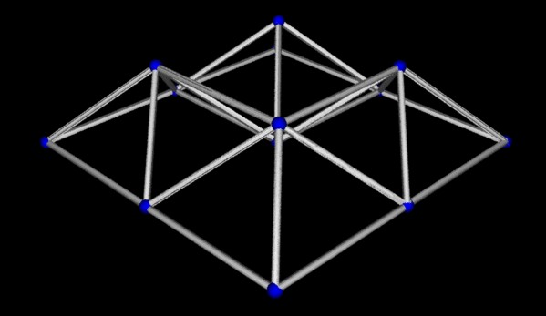
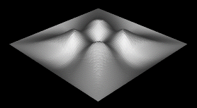

A version of Gram-Schmidt orthogonalization can be used for the evaluation of various "numerical primitives" needed for these computations, assuming the input points have integer coordinates less than about 240. With this assumption, the input data can be in general (but small!) dimension, and be degenerate, and the code relatively simple. I'll talk about the specifics of the numerical primitives, and the applications.
Alpha shapes are useful for finding a surface corresponding to the "shape" of a set of points; they can be computed using the Delaunay triangulation.

Alpha shape of a set of atoms in a crystal
Delaunay triangulations have long been used for scattered data interpolation: given a set of sites (points), and function values at those sites, find estimates of the function value elsewhere. Here's a piece-wise linear interpolant for four sites with function values > 0, and 5 sites with function value = 0:
Piecewise-linear interpolant
Natural neighbor interpolation, sometimes called the "area stealing" approach, is a useful way of interpolating scattered data that is not as widely available as it might be. I have a code for NN interpolation for general dimension.The basic NN interpolant has a discontinuous gradient at the data sites; shown here is the interpolant of four sites at the corners of a square with z>0, plus a site at the center of the square and sites at the boundary of the domain with z=0.

Basic natural neighbor interpolant
There are many ways to make NN interpolants smoother; what is essentially required is an estimate of the gradient at the data sites. I have a variant that seems natural, and produces a reasonable interpolant:
A smoother NN interpolant
The program is available , except for the natural neighbor interpolation.